Research
I conducted extensive user research to understand how and why people use mobile grocery list apps. The research included personas, scenarios, and comparative analyses of ten competing apps. I then conducted in-depth interviews with six employees who are avid grocery app users.
Key Interview Questions:
- How do you typically organize your grocery list? What does your typical grocery trip look like?
- What influences your grocery shopping decisions? (Recipes, restocking the pantry, etc.)
- Think of an app that you use all the time - why do you like the app? What motivates you to keep using it?
- What apps do you use for grocery planning, and what features do you find most valuable? When do you find the app most useful?
- What features are missing from current apps that would improve your experience?
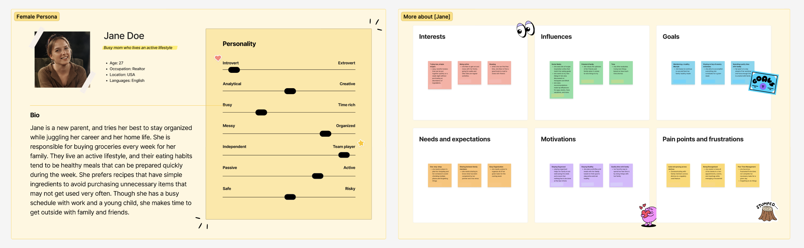
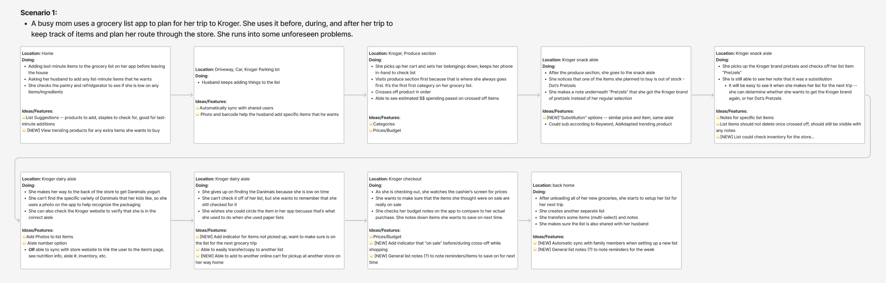
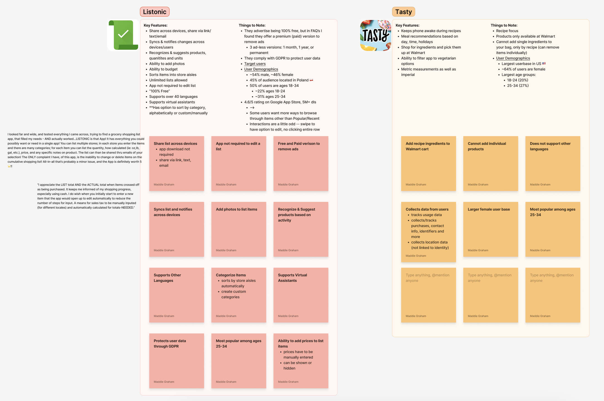
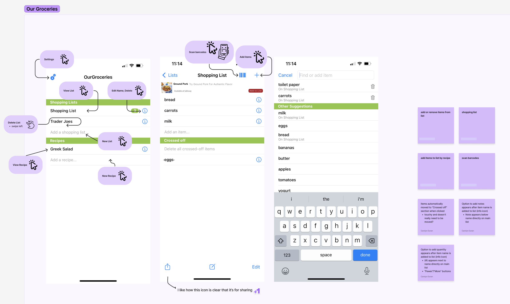
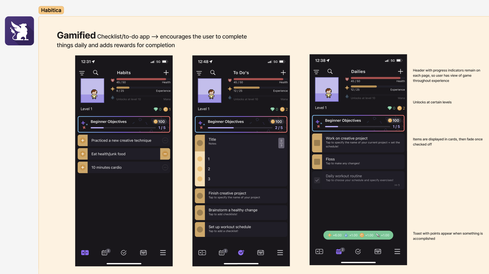
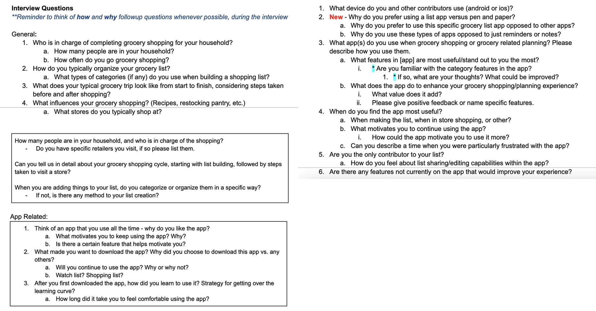
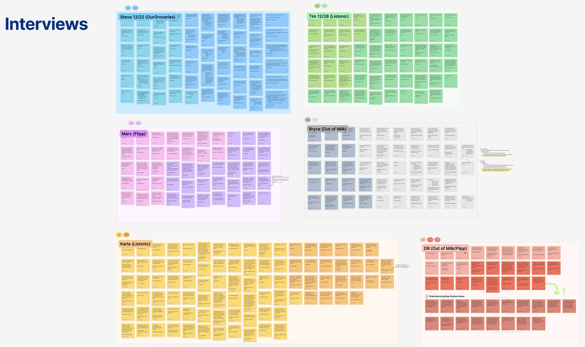
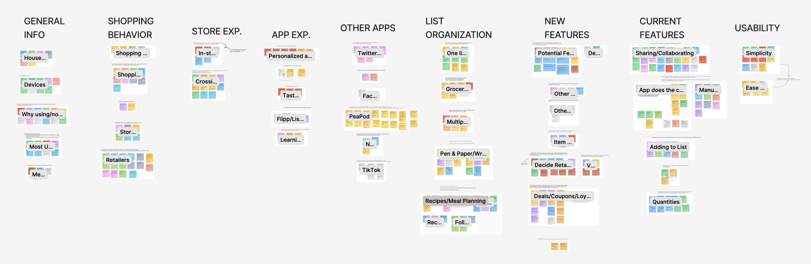
Our findings revealed that a successful app must:
- Streamline In-Store Shopping: Offer quick list creation and an intuitive way to check off items, as the in-store experience is crucial for user satisfaction.
- Integrate Seamlessly: Design the app to be convenient and fit naturally into a shopper's routine, ideally by replicating the physical in-store shopping experience and including information on prices, deals, and inventory.
- Simplify Decision-Making: Include features that are simple yet fun, making it easier for users to make smart decisions during both list planning and in-store shopping.
- Encourage Customization: Provide options for users to organize their lists by store, aisle, or personal preference.
- Boost Loyalty: Add features like recipe inspiration and easy list sharing to provide extra value and encourage long-term use.
For a more comprehensive review of our research and findings, please see the full report: List App Research and Findings (PDF)
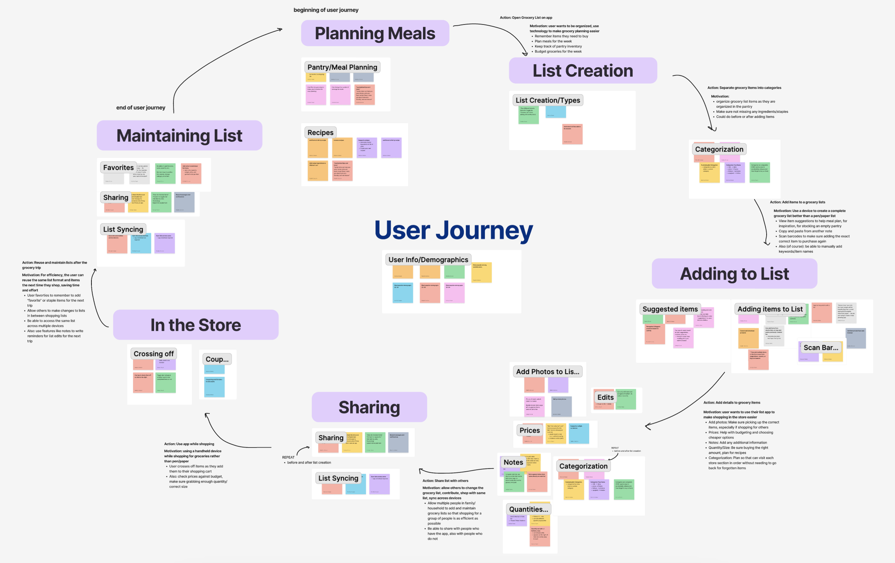
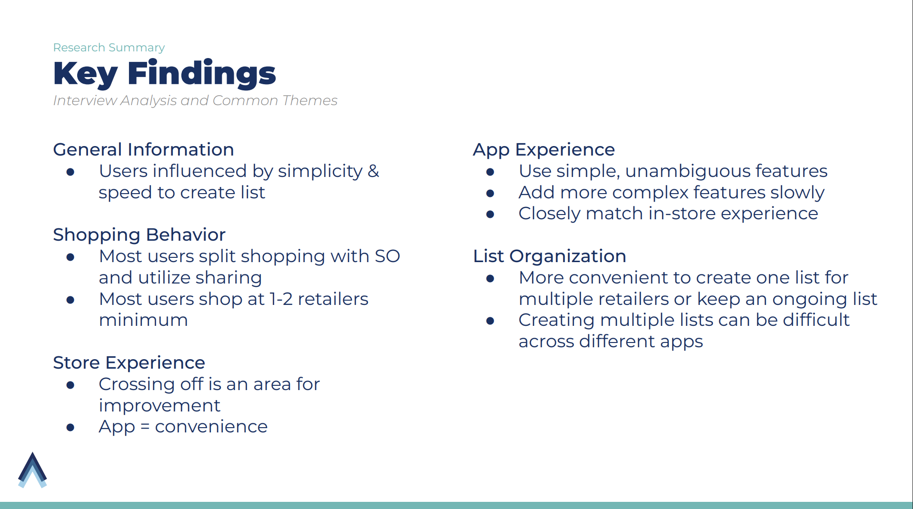
Design Process
The design process was highly iterative, culminating in a full high-fidelity prototype of a mobile app MVP for both iOS and Android.
I used Figma to build reusable components, and I designed and prototyped complex animations in After Effects and LottieFiles to ensure a high-quality visual experience. Project deliverables also included detailed specs for accessible micro-interactions, gestures, and haptic feedback.
The final app design included quick list-building features, streamlined onboarding, multiple list organization options, product suggestions, and an optimized in-store view to improve usability. We expanded our scope by designing an additional desktop experience for list-building on the web.
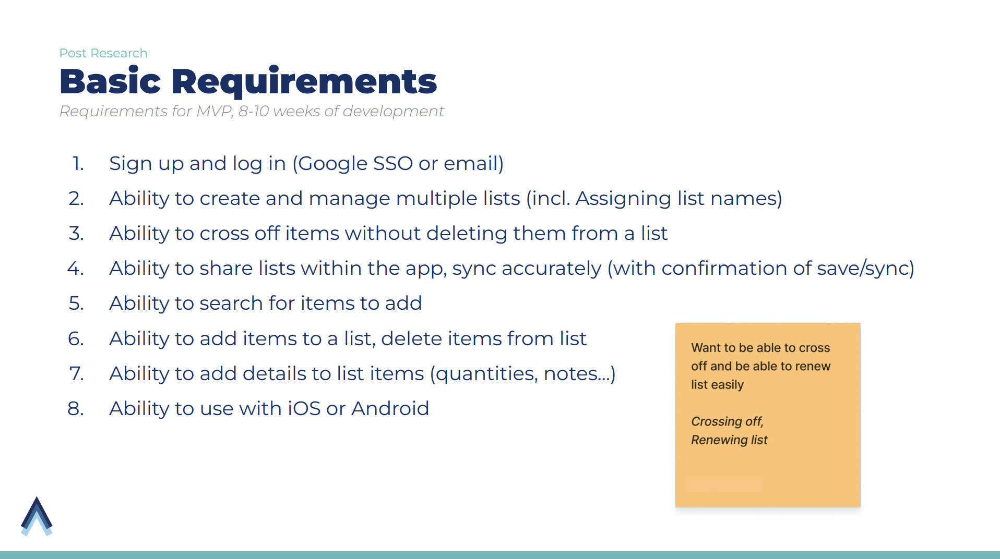
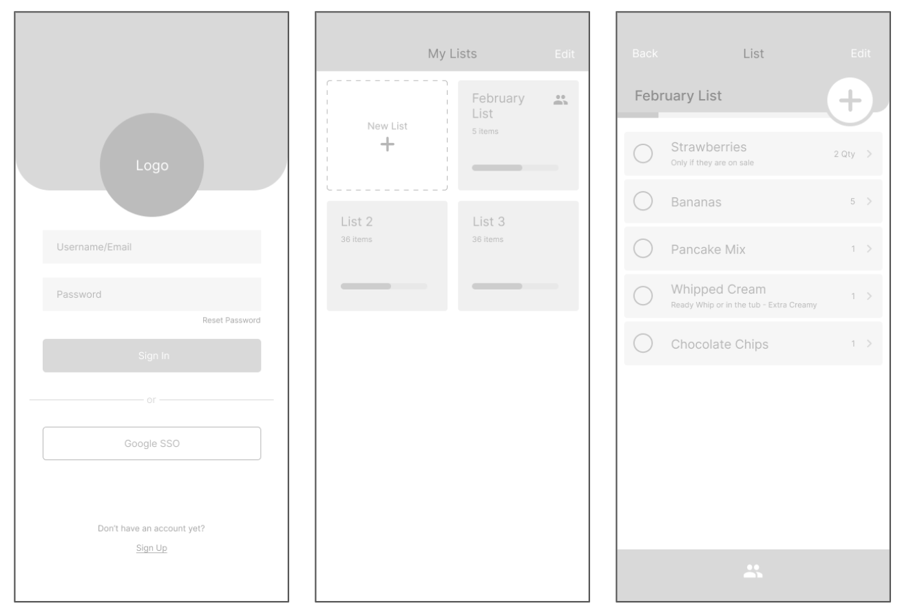
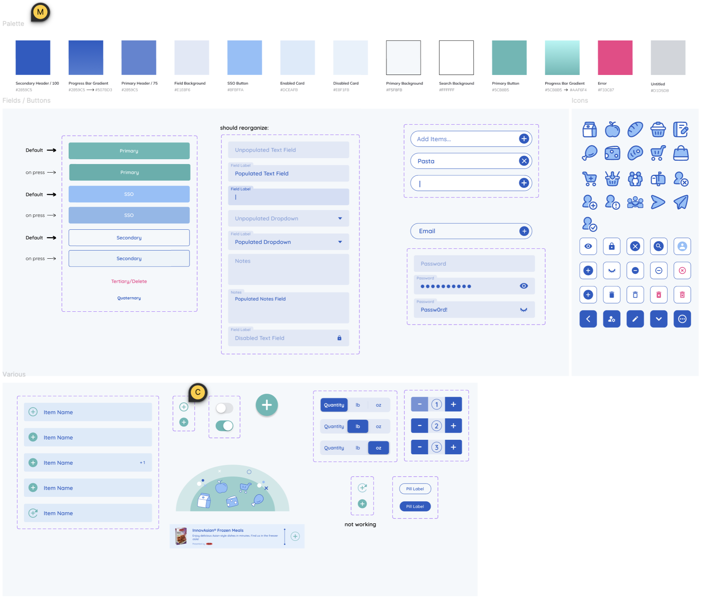
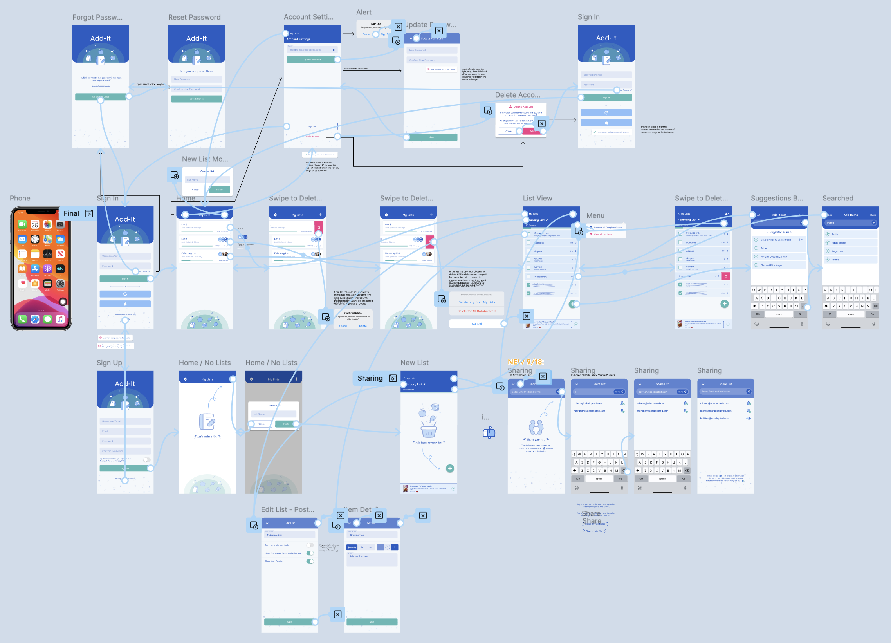
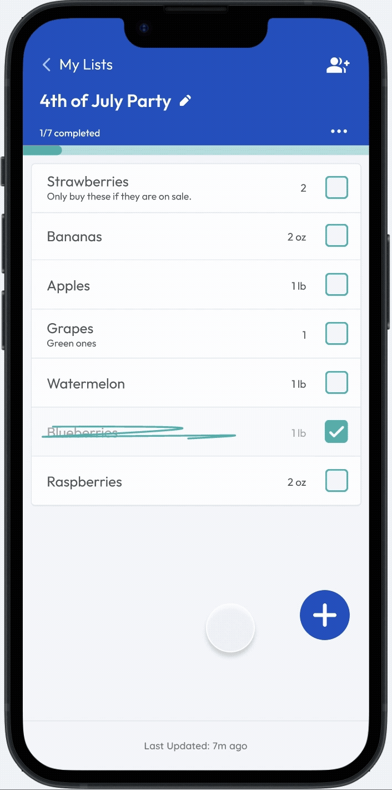
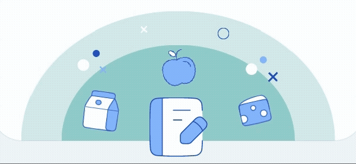
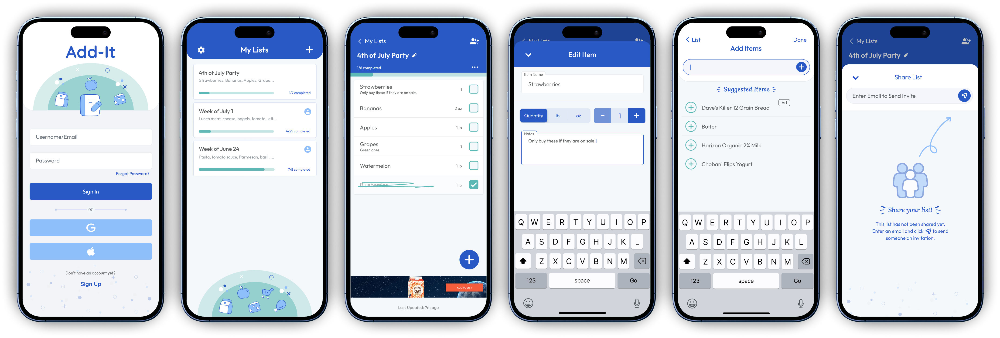
Final Design
Login Flow & Sharing:
Building a List: